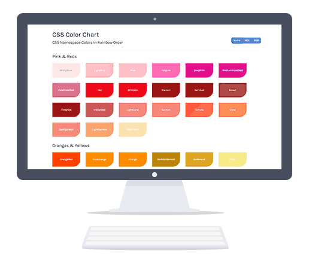

CSS Color Chart is an outpouring of my passion for CSS Colors.
I had used namespace colors in CSS in a limited way but had never
investigated the comprehensive list until I came across this very
colorful project and its designer told me he used only namespace values for the colors.
When looking for charts that had the comprehensive list,
I was disappointed in how they were displayed. They weren't a
good visual of what the colors would look like when applied and I had
trouble telling one shade from another. So that was enough of an excuse
to make my own and put them in rainbow order.
I loved organizing the colors into categories and then painstakingly
trying different color orders. I don't always get time to
obsess over the details and just revel in colors, so this was like a guilty pleasure.

For this project I used Github pages to host a simple HTML/CSS/Javascript site.
Imanol Aranzadi partnered with me to help with the Angular.js and make the values
copy-able to the clipboard.
I enjoyed making this chart so much that I wanted to learn more about how they were
named. I gave a talk at CSS Conf Oakland about what I found.